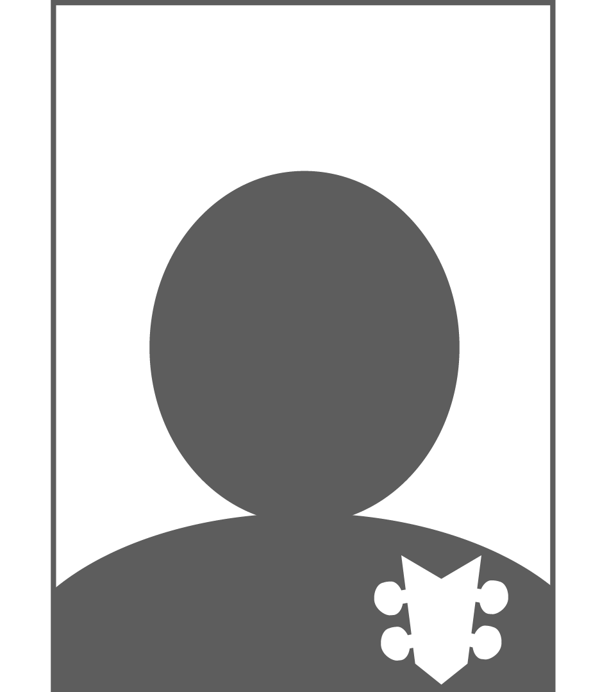
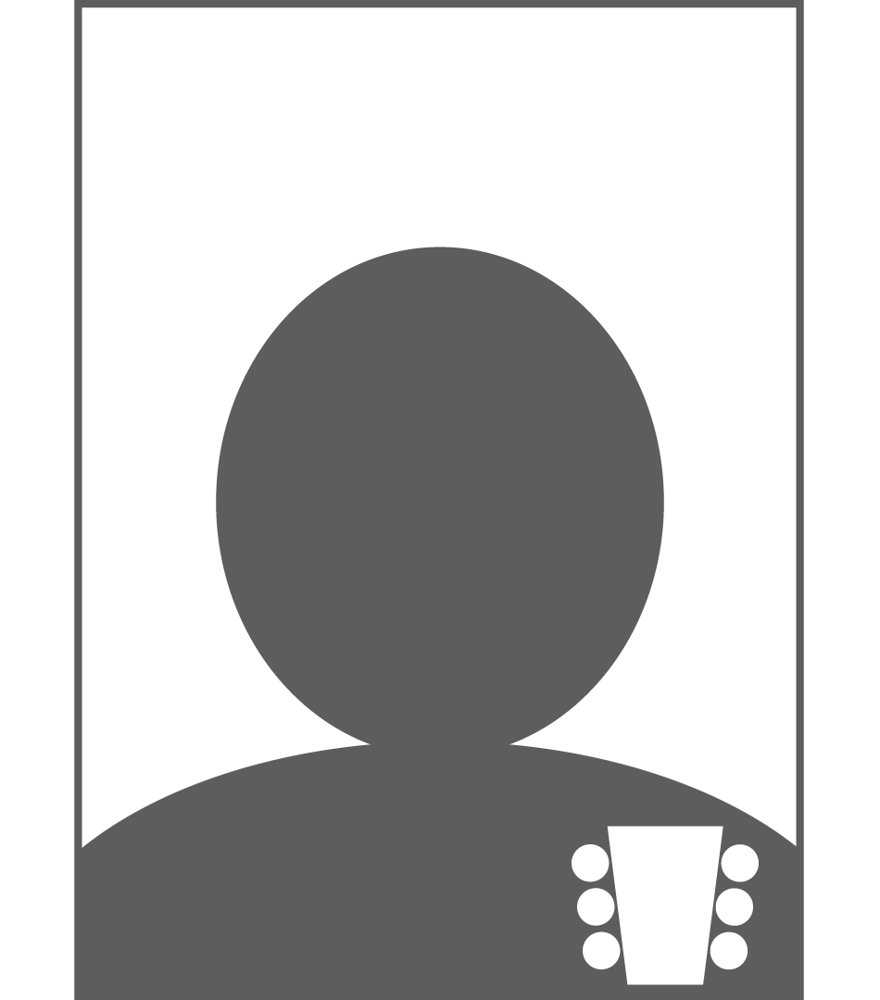
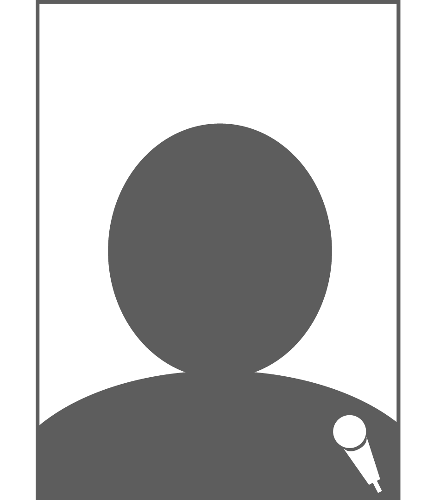
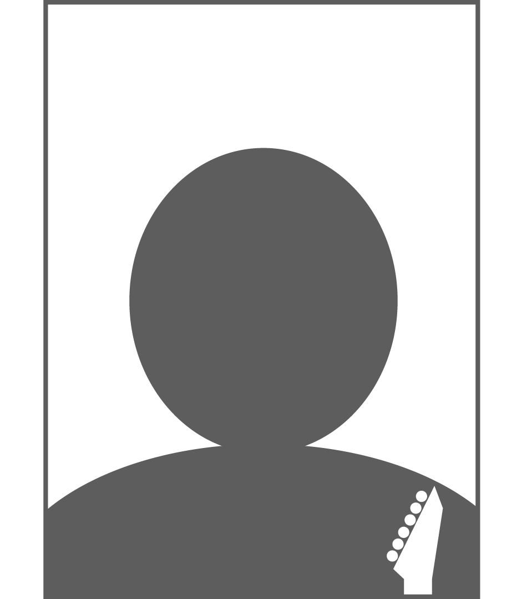
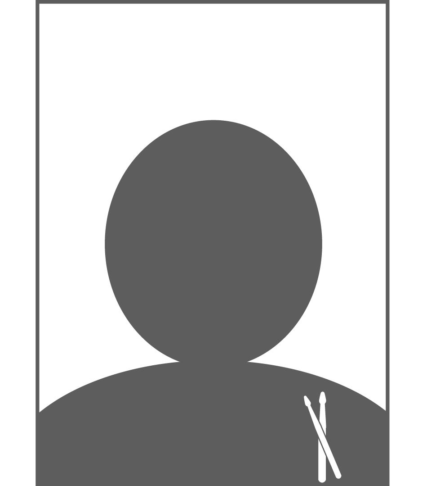

Wij zijn Beyond the BreakingPoint!
Een HardRock/ Metalband uit Sneek. Bestaande uit:
Gijs Nijholt
Mathijs Steenhuis
Roelof Reen
Erin Blauw
Mathijs Smit
De genres van de covers die we spelen verschillen nogal.
Maar over het algemeen beschrijven we onze covers, optredens en het samenspel als energiek en dynamisch.
We maken er graag samen met het publiek een feestje van, waar iedereen bij wordt betrokken.
Het is alweer een jaar geleden. Dus tijd om het weer op te pakken! Je bent van harte welkom, dus hopelijk tot dan!
Laat de kapper de aankomende tijd maar even zitten. Tijd om een bos haar te laten staan en de nekspiertjes te trainen. Want zal er hier ruig aan toe gaan. \,,/
Band contest @ Bolwerk. Bier, bandjes, bier. Wat wil je nog meer? Wees erbij dan maken we er samen een topavond van.